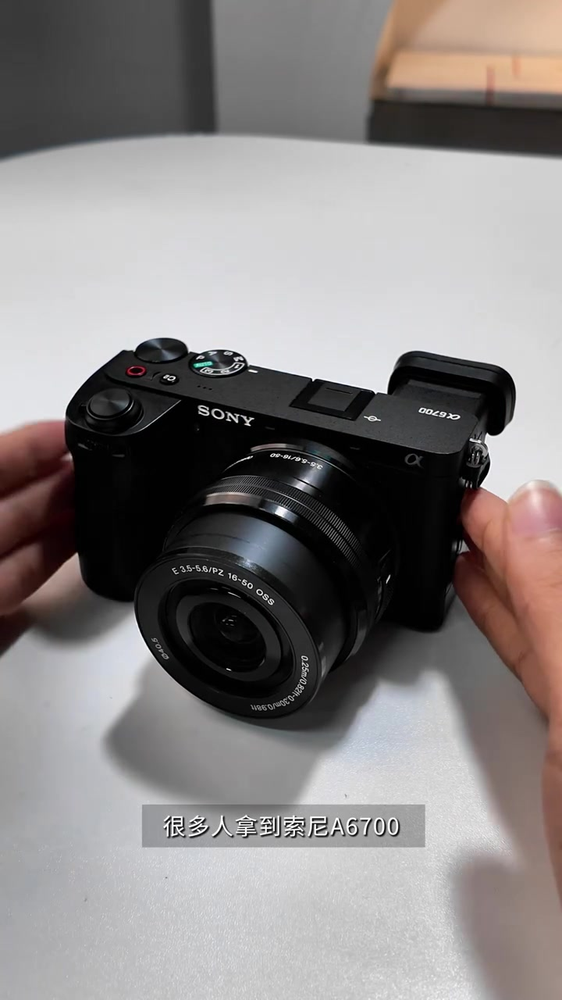
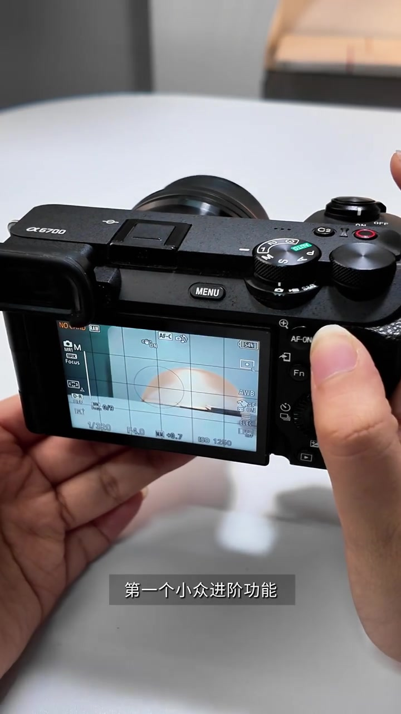
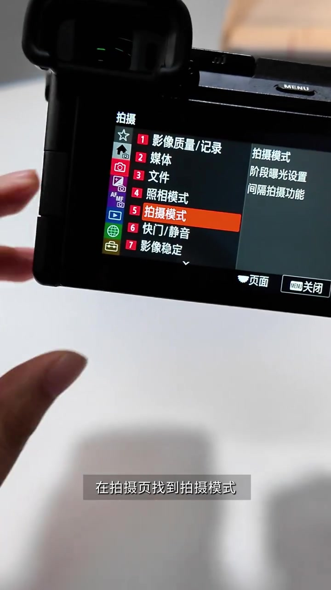
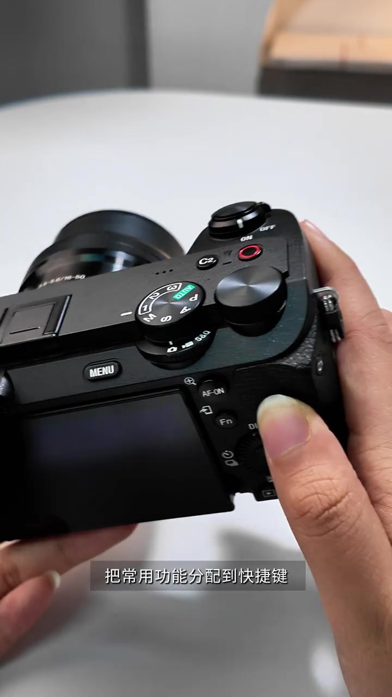
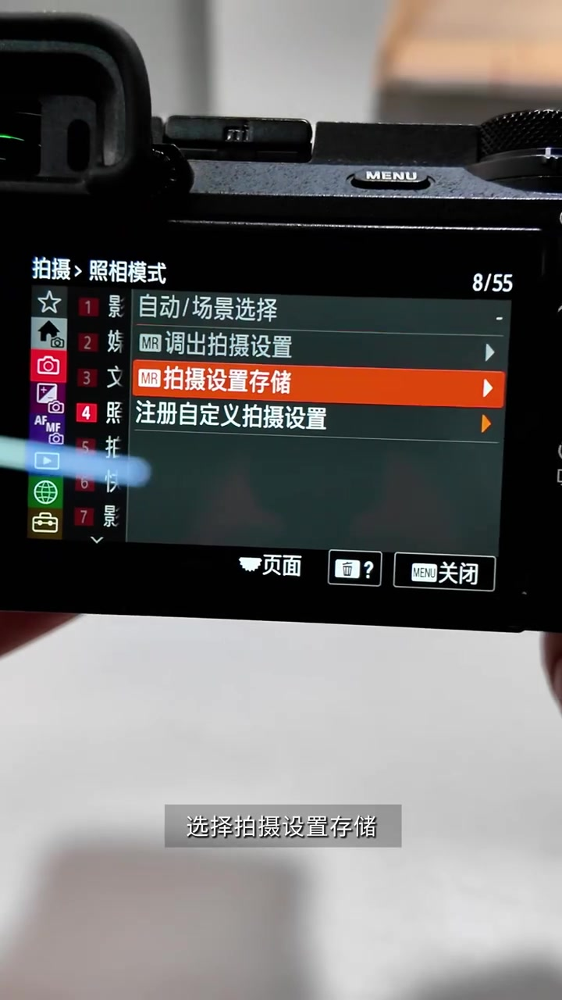
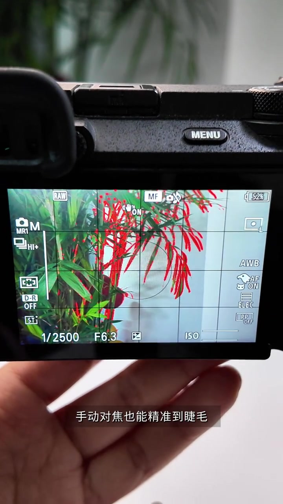
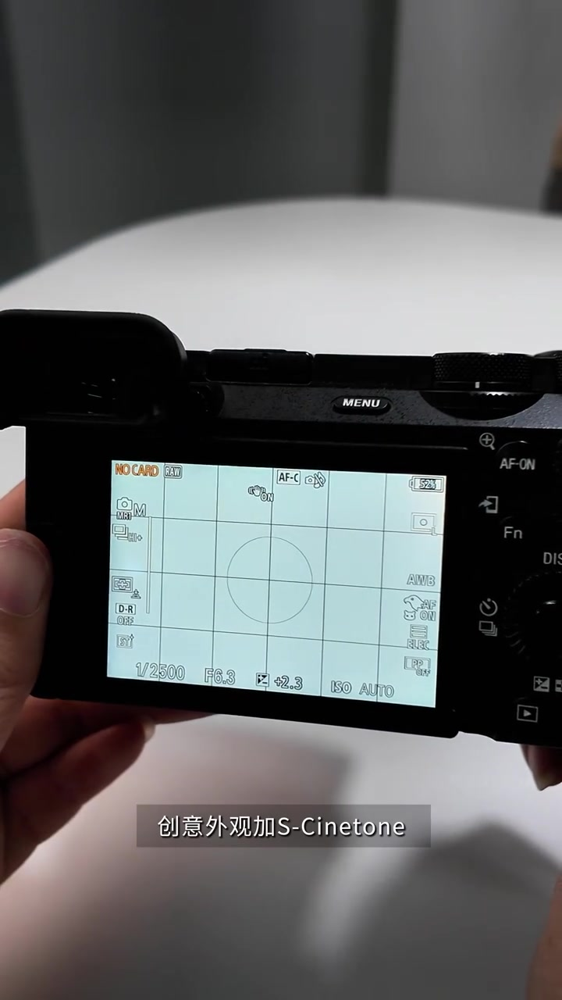
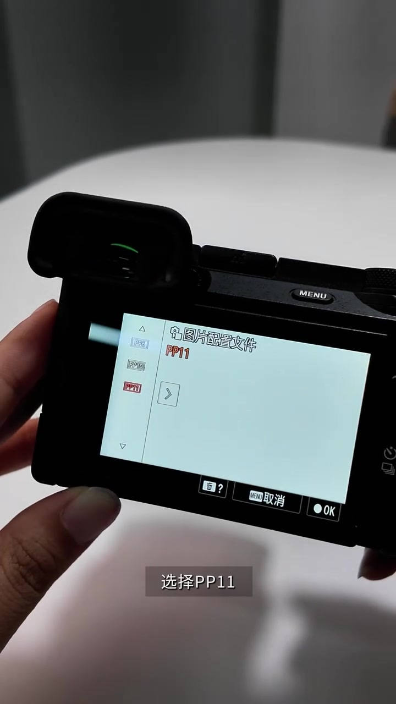

开场：很多人只用到拍照和录像基础档
画面先把索尼 α6700 摆上桌面。讲述者说，很多人拿到机器后只用基础拍照和录像，却不知道这台半画幅旗舰还藏着能提升创作效率和成片质量的进阶玩法。接下来四条功能，就是按菜单路径把这些「隐藏能力」解锁出来。
画面字幕：「很多人拿到索尼A6700」
说明：Whisper 将「A6700」误识为「A6星期」，「堆栈／微距／Menu／峰值显示／S-Cinetone／PP11／电影感／进阶玩法」等处亦有误识。下文叙述以可见字幕与菜单界面为准；页面末尾仍完整保留全部 Whisper 分段。

功能一：对焦包围拍摄，后期一键堆栈
第一条被标成「小众进阶功能」——对焦包围。相机自动连拍多张不同焦点的照片，后期导入 Photoshop 一键堆栈，让微距或风光主体从前到后都清晰，用来解决景深不够。
画面字幕：「后期呢导入PS一键堆栈」
操作路径很短：按 Menu 进入菜单，在拍摄页找到「拍摄模式」，选择「对焦包围」；增量调到 4，拍摄张数可以从 9 张开始练手。


功能二：自定义快捷键，再存三套 MR
第二条被叫作「效率技巧」：把常用功能分到快捷键，再用三套 MR 参数一键切换，拍照片和视频都不耽误。讲述者建议先做自定义键，再做拍摄设置存储。
画面字幕：「把常用功能分配到快捷键」
路径是：Menu → 公文包图标里的「操作自定义」→ 照片拍摄模式的自定义键设置。示例把 C1 设为对焦模式切换，C2 设为对焦区域切换。自定义完成后，再到拍摄页的「照相模式」，选择「拍摄设置存储」，把常用三套场景参数写入对应档位；之后直接拨到档位一键调用。


功能三：峰值对焦，手动对焦也看得到清晰边
第三条是「精准技巧」——峰值对焦。打开后，手动对焦也能尽量精准到睫毛，大光圈拍摄更不容易跑焦。菜单在对焦页找到「峰值显示」并打开，峰值水平设为高，峰值色彩设为红色。
画面字幕：「手动对焦也能精准到睫毛」
回到拍摄页面，对焦越清晰的位置红色越多。画面用红色枝条演示：对焦边缘被峰值描红，手动合焦不再只靠猜。

功能四：创意外观 FL 加 PP11 S-Cinetone
第四条是「画质技巧」：创意外观搭配 S-Cinetone，不用后期调色也能直出偏电影感的画面，照片和视频都能用。路径在曝光／颜色页的「颜色／色调」：照片拍摄模式选创意外观 FL；视频录制模式则点开图片配置文件，选择 PP11，也就是 S-Cinetone。
画面字幕：「创意外观加S-Cinetone」／「选择PP11」
讲述者总结这两种模式下「直出效果绝了」——这是个人观感，不是客观测色结论；适用前提是你接受该色彩风格，并理解不同场景仍可能需要微调曝光与白平衡。


收束：四个进阶玩法，设置一次就能长期用
四条功能讲完后，讲述者强调「设置一次就能够长期使用」，并提醒有帮助就收藏，拍摄时跟着设置一步到位。整条视频更像一份可复现的菜单清单，而不是深度测机。
画面字幕意图：「以上四个进阶玩法，设置一次就能够长期使用」